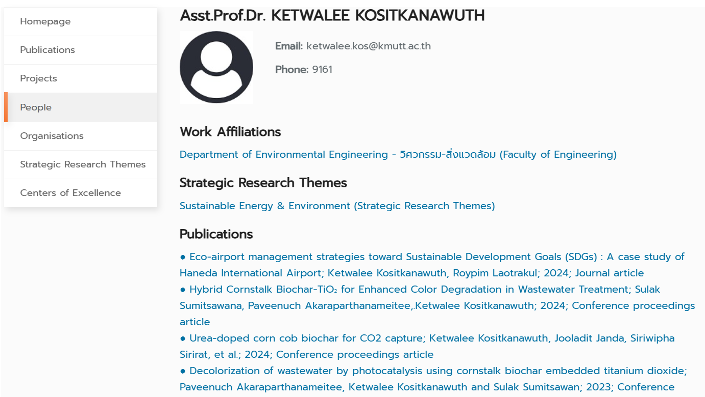
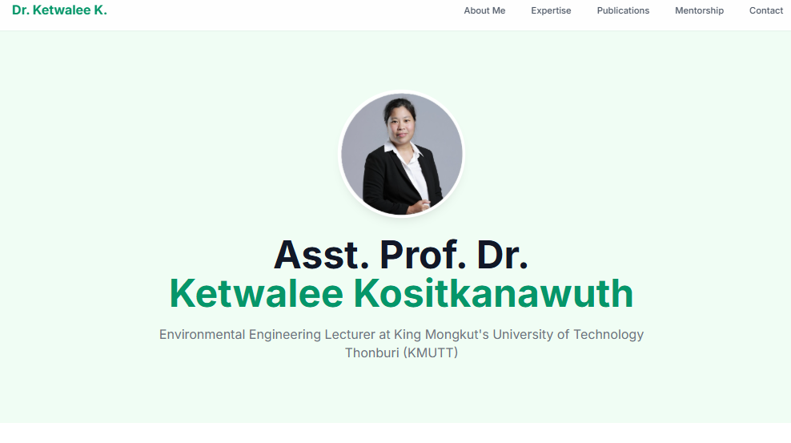

Are you a business owner looking for a new website? You’ve probably heard of terms like WordPress, Squarespace, or Shopify. And while those platforms can be great, they also have their downsides—like slow load times, security vulnerabilities, and a long list of monthly fees.
My approach is different. I don’t use templates or pre-made themes. Instead, I use a modern, collaborative process to build websites that are fast, secure, and uniquely yours. Let me explain how we can do it together.
A Case Study: Turning a Filing Cabinet into a Recruitment Engine
Every professional needs a website that works as hard as they do. Recently, I had the opportunity to transform a university-hosted academic profile from a passive "digital filing cabinet" into an active tool for student recruitment.
The original site was static, impersonal, and slow. It listed publications in a plain, unformatted block and lacked any dynamic features to engage prospective students.
Before
The original university profile was text-heavy and functioned like a digital filing cabinet.
After
The new site features a clean design, a professional headshot, and interactive elements.
Using our modern workflow, we created a new website that was more than just an aesthetic upgrade—it was a strategic overhaul. The new site loads instantly, looks professional, and now features an interactive tool called the "Student Research Idea Generator."
Try The Tool Yourself
This tool allows a prospective student to select an area of expertise and receive a personalized research idea.
"The new site has dramatically improved my confidence and professional online presence. The interactive Student Research Project Idea Generator has been a uniquely engaging and useful tool for both my current and prospective students."